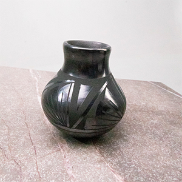
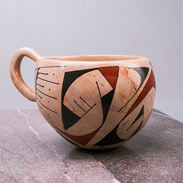
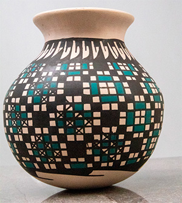
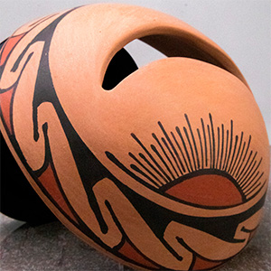
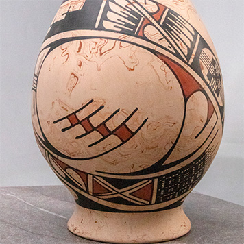
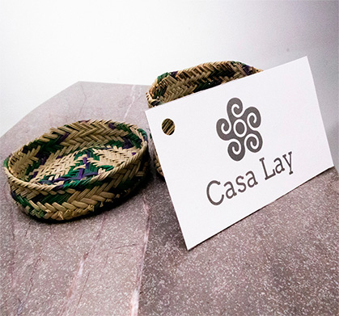
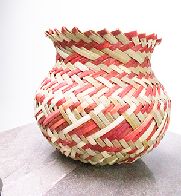
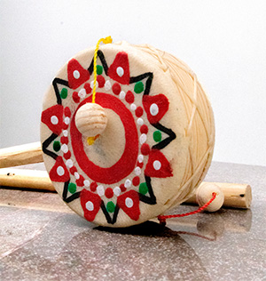
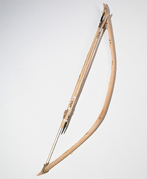

Vasija "Centinela Negro"
Esta pieza de alfarería fina del estilo Mata Ortiz, originaria del norte de México,
está elaborada y pulida a mano. Su técnica “negro sobre negro” combina brillo de grafito
pulido con diseños geométricos mate, creando profundidad visual hipnótica muy atractiva.

Vasija "Eco de Paquimé"
Vasija policromada con asa que refleja el renacimiento de las artes prehispánicas del norte de México.
Decorada a mano con pigmentos terracota y negro sobre arcilla crema pulida, presenta diseño estilo
Ramos Polícromo de la cultura Casas Grandes.

Vasija "Cielo de Adobe"
Esta pieza de alfarería de Mata Ortiz es una verdadera joya del arte contemporáneo mexicano.
Lo que la hace única es la precisión casi matemática de sus patrones, que parecen formar un
tejido digital sobre una forma orgánica de barro.

Olla "Ocaso en el Desierto"
Esta es una pieza de cerámica escultórica de Mata Ortiz que trasciende la alfarería tradicional.
Su diseño innovador incorpora una apertura orgánica en la parte superior, convirtiendo la vasija
en una obra de arte tridimensional que juega con la luz y la sombra.

Vasija "Vientos de Mármol"
Esta extraordinaria vasija ovoide de Mata Ortiz es una pieza de exhibición que destaca por su rara
y compleja técnica de arcilla marmolada. Es una obra que fusiona la geología del desierto con la
precisión del pincel artesanal.

Cestas "Esencia de Palma
Este encantador set de cestería en miniatura es una muestra de la destreza manual de los artesanos
tradicionales.
Elaborado con fibras de palma finamente seleccionadas, este par de cestos destaca por su detalle y su
vibrante combinación de colores.

Canasta "Tejido de la Sierra"
Esta hermosa canasta o "guari" es un ejemplo auténtico del arte del tejido manual de la cultura
Tarahumara.
Elaborada con fibras naturales del desierto, esta pieza combina utilidad ancestral con una estética
rústica y vibrante.

Tambor de mano "Ritmo de Estrella"
Este encantador tambor de mano artesanal es una pieza vibrante que captura la esencia de los juguetes
tradicionales de madera.
Con un diseño geométrico audaz y un sonido rítmico característico, es tanto un instrumento musical
sencillo como un objeto
decorativo.

Tambor de mano "Corazón de Fiesta"
Este vibrante tambor de mano tradicional es un ejemplo clásico de la artesanía de madera y cuero. Con un
diseño lleno de energía
y contraste, es una pieza que celebra la alegría de los mercados populares y las ferias tradicionales.

Arco "Vuelo de la Sierra"
Este arco artesanal con flechas es una pieza auténtica que evoca las antiguas tradiciones de caza y
supervivencia de las culturas del
norte de México. Elaborado con materiales naturales y técnicas manuales.